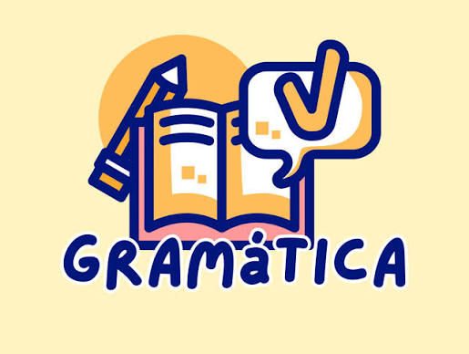

Las Categorías Gramaticales
El lenguaje es como un software complejo: para que funcione bien, cada una de sus piezas debe cumplir un rol exacto. Las categorías gramaticales son, precisamente, las distintas clases de palabras que usamos para construir nuestros mensajes. Dominarlas no es solo aprender reglas de memoria; es entender cómo combinamos ideas para que los demás nos entiendan a la perfección, ya sea al hablar con un amigo o al redactar un correo técnico.
En nuestro idioma existen dos tipos de palabras: las variables, que cambian de forma según el género o el número (como los sustantivos y verbos), y las invariables, que siempre se escriben igual y funcionan como conectores (como las preposiciones o conjunciones). Aunque normalmente se agrupan en nueve bloques, en este proyecto analizaremos diez categorías esenciales para estudiar a fondo cómo se organiza la comunicación moderna.
El objetivo de este trabajo es explorar cada una de estas piezas de forma dinámica y visual. A través de ejemplos enfocados en la tecnología y la vida diaria, recursos visuales y juegos interactivos, veremos que la gramática, lejos de ser aburrida, es el sistema operativo detrás de cada pensamiento que expresamos.
